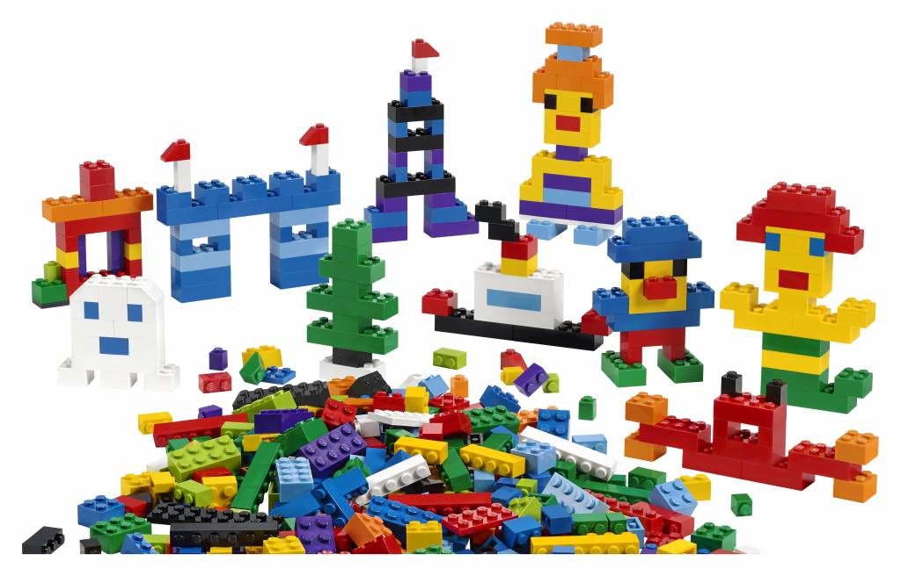

3 R-Base
- Mise en place : Télécharger le dossier exo3 et décompressez le sur votre ordinateur. Puis ouvrez le projet R
exo3.Rprojdans Rstudio.
L’idée pédagogique est d’apprendre directement aux étudiants à programmer en R markdown plutôt qu’en R. Pourquoi ? Parce qu’ainsi ils vont simultanément :
- taper du code R qu’ils ignorent
- écrire sous ce code les explications du point de vue informatique
- observer les résultats statistiques
- interpréter ces résultats d’un point de vue statistique
Cela n’a l’air de rien, mais en procédant ainsi les étudiants apprennent à produire à la fois leurs notes de cours en R, leurs notes de cours en statistiques et … le langage Rmarkdown pour rédiger leurs futurs travaux.
Bref, si tout a bien marché, l’étudiant n’aura même pas besoin de consulter le présent document, si ce n’est pour vérifier que son programme donne les mêmes résultats …
Les deux exercices qui suivent utilisent volontairement les fonctions de base du langage R (on dit que l’on programme en R-base) à l’exclusion de tout package c’est-à-dire de tout outil graphique ou statistique mis au point ultérieurement.
Par comparaison avec le jeu de lego, cela revient à effectuer des constructions avec la boîte de base. A première vue cela peut sembler frustrant. Mais en réalité cela ne bride en rien l’imagination et permet d’apprendre plein de choses sans être distrait …
- La manipulation des tableaux de données : c’est-à-dire à la fois l’importation, le recodage éventuel des variables et la correction de leur type, la sélection de lignes ou de colonnes pour créer des sous-tableaux.
- L’exploration statistique univariée : c’est-à-dire le calcul de résumés simples d’une variable à l’aide de paramètres statistiques (valeurs centrales, dispersion) et la production de graphiques élémentaires.
Pour rendre l’apprentissage moins austère, nous avons choisi un tableau de données original qui présente les principales caractéristiques de 25 pays européens en 1989, à la veille de la chute du Mur de Berlin. Pour ceux qui ne connaissent pas cette période ancienne, voici une petite carte :
Plutôt que de se contenter apprendre par coeur des commandes R (ce qu’il faudra faire, évidemment), les étudiants seront amenés à construire un véritable rapport sur la situation économique, démographique et sociale de l’Europe en 1989, ce qui les amènera à renforcer leur pratique du R markdown. Par ailleurs, on organisera un débat entre les étudiants qui seront placés en deux groupes rivaux chargés de défendre respectivement les pays socialistes et lespays capitalistes. A chaque groupe de montrer que son système politique est le meilleur …
3.1 Tableaux
3.1.1 Importation
3.1.1.1 Localisation des fichiers
- La commande
getwd()permet de connaître la position du répertoire courant. Si vous avez ouvert un projet (ce qui est vivement recommandé) la localisation est l’emplacement du fichier .Rproj.
getwd()
#> [1] "/Users/claudegrasland1/git/bivar2023"- La commande
list.files()permet d’examiner le contenu du répertoire courant
list.files()
#> [1] "_extensions" "_freeze" "_quarto.yml"
#> [4] "_setup.qmd" "01-PremierPas.html" "01-PremierPas.qmd"
#> [7] "02-OfficeKiller_files" "02-OfficeKiller.html" "02-OfficeKiller.qmd"
#> [10] "03-Base_files" "03-Base.qmd" "03-Base.rmarkdown"
#> [13] "11-Corrélation.qmd" "12-Régression.qmd" "13-Anova.qmd"
#> [16] "21-Tabcont.qmd" "bivar2023.Rproj" "css"
#> [19] "DESCRIPTION" "docs" "index.html"
#> [22] "index.pdf" "index.qmd" "js"
#> [25] "latex" "LICENSE" "README.md"
#> [28] "resources" "site_libs" "XX-ressources.qmd"3.1.1.2 Chargement d’un fichier texte
- Avec la souris
Cliquer sur les menus déroulants File/Import Dataset/From text (base) puis suivre le menu
- Avec des lignes de code
On utilise par exemple la fonction read.table() en précisant les paramètres utiles :
euro1988 <- read.table(file = "resources/data/europe88/euro1988.csv", # nom du fichier et chemin d'accès
sep = ";", # séparateur (ici, des points-virgule)
header = TRUE, # ligne d'en-tête avec le nom des variables
encoding="UTF-8") # encodage adapté au français3.1.1.3 Dimensions d’un tableau
- La fonction
dim()fournit les dimensions d’un tableau
dim(euro1988)
#> [1] 25 15- La fonction
class()fournit le type d’un tableau
class(euro1988)
#> [1] "data.frame"3.1.1.4 Visualisation du contenu d’un tableau
- Premières lignes avec
head()
head(euro1988) # Affiche par défaut les 6 premières lignes
#> PAYS BLOC PNB TMI ESP URB NAT MOR FEC JEU VIE SUP POP X Y
#> 1 ALB Soc 600 43.0 71 34 27 6 3.3 35 5 29 3.1 4825115 1684833
#> 2 AUT Cap 10000 10.3 75 55 12 12 1.4 18 14 84 7.6 4299715 2335579
#> 3 BEL Cap 9200 9.7 75 95 12 11 1.5 19 14 31 9.9 3636312 2667243
#> 4 BGR Soc 2000 14.5 72 65 13 11 2.0 21 11 111 9.0 5206070 1930219
#> 5 CHE Cap 17800 6.8 77 61 12 9 1.5 17 14 41 6.6 3869378 2243130
#> 6 CSK Soc 3200 13.9 71 74 14 12 2.0 24 11 128 15.6 4487005 2540281- Dernières lignes avec
tail()
tail(euro1988,2) # Affiche les 2 dernières lignes
#> PAYS BLOC PNB TMI ESP URB NAT MOR FEC JEU VIE SUP POP X Y
#> 24 SWE Cap 13200 5.9 77 83 12 11 1.8 18 18 450 8.4 4321587 3961396
#> 25 YUG Soc 2300 27.1 70 47 15 8 2.1 24 8 256 23.6 4686147 19967373.1.1.5 Verification des variables
- Vérifie le type avec
str()
str(euro1988)
#> 'data.frame': 25 obs. of 15 variables:
#> $ PAYS: chr "ALB" "AUT" "BEL" "BGR" ...
#> $ BLOC: chr "Soc" "Cap" "Cap" "Soc" ...
#> $ PNB : int 600 10000 9200 2000 17800 3200 3700 12000 12600 4800 ...
#> $ TMI : num 43 10.3 9.7 14.5 6.8 13.9 9.2 8.6 8.4 9 ...
#> $ ESP : int 71 75 75 72 77 71 72 75 75 76 ...
#> $ URB : int 34 55 95 65 61 74 77 94 84 91 ...
#> $ NAT : int 27 12 12 13 12 14 13 10 11 12 ...
#> $ MOR : int 6 12 11 11 9 12 13 11 11 8 ...
#> $ FEC : num 3.3 1.4 1.5 2 1.5 2 1.7 1.4 1.5 1.7 ...
#> $ JEU : int 35 18 19 21 17 24 19 15 18 23 ...
#> $ VIE : int 5 14 14 11 14 11 14 15 15 12 ...
#> $ SUP : int 29 84 31 111 41 128 108 248 43 505 ...
#> $ POP : num 3.1 7.6 9.9 9 6.6 15.6 16.6 61.2 5.1 39 ...
#> $ X : num 4825115 4299715 3636312 5206070 3869378 ...
#> $ Y : num 1684833 2335579 2667243 1930219 2243130 ...- Recode avec les fonctions
as.xxx()
euro1988$BLOC<-as.factor(euro1988$PAYS)
str(euro1988)
#> 'data.frame': 25 obs. of 15 variables:
#> $ PAYS: chr "ALB" "AUT" "BEL" "BGR" ...
#> $ BLOC: Factor w/ 25 levels "ALB","AUT","BEL",..: 1 2 3 4 5 6 7 8 9 10 ...
#> $ PNB : int 600 10000 9200 2000 17800 3200 3700 12000 12600 4800 ...
#> $ TMI : num 43 10.3 9.7 14.5 6.8 13.9 9.2 8.6 8.4 9 ...
#> $ ESP : int 71 75 75 72 77 71 72 75 75 76 ...
#> $ URB : int 34 55 95 65 61 74 77 94 84 91 ...
#> $ NAT : int 27 12 12 13 12 14 13 10 11 12 ...
#> $ MOR : int 6 12 11 11 9 12 13 11 11 8 ...
#> $ FEC : num 3.3 1.4 1.5 2 1.5 2 1.7 1.4 1.5 1.7 ...
#> $ JEU : int 35 18 19 21 17 24 19 15 18 23 ...
#> $ VIE : int 5 14 14 11 14 11 14 15 15 12 ...
#> $ SUP : int 29 84 31 111 41 128 108 248 43 505 ...
#> $ POP : num 3.1 7.6 9.9 9 6.6 15.6 16.6 61.2 5.1 39 ...
#> $ X : num 4825115 4299715 3636312 5206070 3869378 ...
#> $ Y : num 1684833 2335579 2667243 1930219 2243130 ...3.1.1.6 Résume du tableau
La fonction summary() donne un aperçu général des variables
summary(euro1988)
#> PAYS BLOC PNB TMI
#> Length:25 ALB : 1 Min. : 600 Min. : 5.80
#> Class :character AUT : 1 1st Qu.: 2300 1st Qu.: 8.50
#> Mode :character BEL : 1 Median : 8600 Median : 9.70
#> BGR : 1 Mean : 7580 Mean :12.99
#> CHE : 1 3rd Qu.:12000 3rd Qu.:14.50
#> CSK : 1 Max. :17800 Max. :43.00
#> (Other):19
#> ESP URB NAT MOR FEC
#> Min. :70.00 Min. :30.00 Min. :10.0 Min. : 6.00 Min. :1.400
#> 1st Qu.:72.00 1st Qu.:58.00 1st Qu.:12.0 1st Qu.: 9.00 1st Qu.:1.500
#> Median :75.00 Median :71.00 Median :12.0 Median :11.00 Median :1.700
#> Mean :73.72 Mean :68.44 Mean :13.4 Mean :10.36 Mean :1.816
#> 3rd Qu.:75.00 3rd Qu.:83.00 3rd Qu.:14.0 3rd Qu.:11.00 3rd Qu.:2.000
#> Max. :77.00 Max. :95.00 Max. :27.0 Max. :14.00 Max. :3.300
#>
#> JEU VIE SUP POP
#> Min. :15.00 Min. : 5.00 Min. : 3.0 Min. : 0.40
#> 1st Qu.:19.00 1st Qu.:11.00 1st Qu.: 70.0 1st Qu.: 6.60
#> Median :19.00 Median :13.00 Median :128.0 Median :10.30
#> Mean :21.16 Mean :12.52 Mean :190.7 Mean :19.83
#> 3rd Qu.:23.00 3rd Qu.:14.00 3rd Qu.:301.0 3rd Qu.:23.60
#> Max. :35.00 Max. :18.00 Max. :551.0 Max. :61.20
#>
#> X Y
#> Min. :2498763 Min. :1535337
#> 1st Qu.:3713871 1st Qu.:1996737
#> Median :4166231 Median :2540281
#> Mean :4091984 Mean :2572739
#> 3rd Qu.:4686147 3rd Qu.:2851709
#> Max. :5206070 Max. :4230412
#> 3.1.2 Transformations
3.1.2.1 Copie intégrale
Elle s’effectue avec l’opérateur <-
tab<-euro1988
dim(tab)
#> [1] 25 15
head(tab,2)
#> PAYS BLOC PNB TMI ESP URB NAT MOR FEC JEU VIE SUP POP X Y
#> 1 ALB ALB 600 43.0 71 34 27 6 3.3 35 5 29 3.1 4825115 1684833
#> 2 AUT AUT 10000 10.3 75 55 12 12 1.4 18 14 84 7.6 4299715 2335579
tail(tab,2)
#> PAYS BLOC PNB TMI ESP URB NAT MOR FEC JEU VIE SUP POP X Y
#> 24 SWE SWE 13200 5.9 77 83 12 11 1.8 18 18 450 8.4 4321587 3961396
#> 25 YUG YUG 2300 27.1 70 47 15 8 2.1 24 8 256 23.6 4686147 19967373.1.2.2 Sélection de lignes
On utilise la syntaxe tab2<-tab[conditions , ] avec les opérateurs logiques suivants
== : est égal à
!= : est différent de
> : est strictement supérieur à
< : est strictement inférieur à
>= : est supérieur ou égal à
<= : est inférieur ou égal à
& : ET (vrai si les deux conditions sont vérifiées)
| : OU inclusif (vrai si l’une des conditions est vérifiée)
xor : OU exclusif (vrai si une seule des conditions est vérifiée)
Exemple de sélection des pays socialistes
tabsoc<-euro1988[euro1988$BLOC=="Soc",]
tabsoc
#> [1] PAYS BLOC PNB TMI ESP URB NAT MOR FEC JEU VIE SUP POP X Y
#> <0 rows> (or 0-length row.names)- Exemple de sélection des pays non socialistes
tabcap<-euro1988[euro1988$BLOC!="Soc",]
tabcap
#> PAYS BLOC PNB TMI ESP URB NAT MOR FEC JEU VIE SUP POP X Y
#> 1 ALB ALB 600 43.0 71 34 27 6 3.3 35 5 29 3.1 4825115 1684833
#> 2 AUT AUT 10000 10.3 75 55 12 12 1.4 18 14 84 7.6 4299715 2335579
#> 3 BEL BEL 9200 9.7 75 95 12 11 1.5 19 14 31 9.9 3636312 2667243
#> 4 BGR BGR 2000 14.5 72 65 13 11 2.0 21 11 111 9.0 5206070 1930219
#> 5 CHE CHE 17800 6.8 77 61 12 9 1.5 17 14 41 6.6 3869378 2243130
#> 6 CSK CSK 3200 13.9 71 74 14 12 2.0 24 11 128 15.6 4487005 2540281
#> 7 DDR DDR 3700 9.2 72 77 13 13 1.7 19 14 108 16.6 4166231 2825762
#> 8 DEU DEU 12000 8.6 75 94 10 11 1.4 15 15 248 61.2 3962835 2640209
#> 9 DNK DNK 12600 8.4 75 84 11 11 1.5 18 15 43 5.1 3958433 3234283
#> 10 ESP ESP 4800 9.0 76 91 12 8 1.7 23 12 505 39.0 2875285 1646307
#> 11 FIN FIN 12200 5.8 74 62 12 10 1.6 19 13 337 4.9 4774974 4230412
#> 12 FRA FRA 10100 8.0 75 73 14 10 1.8 21 13 551 55.9 3441707 2245325
#> 13 GBR GBR 8900 9.5 75 91 13 12 1.8 19 15 245 57.1 3212580 3065463
#> [ reached 'max' / getOption("max.print") -- omitted 12 rows ]- Exemple de sélection des pays de plus 10 millions d’habitant
tabbig<-euro1988[euro1988$POP>20,]
tabbig
#> PAYS BLOC PNB TMI ESP URB NAT MOR FEC JEU VIE SUP POP X Y
#> 8 DEU DEU 12000 8.6 75 94 10 11 1.4 15 15 248 61.2 3962835 2640209
#> 10 ESP ESP 4800 9.0 76 91 12 8 1.7 23 12 505 39.0 2875285 1646307
#> 12 FRA FRA 10100 8.0 75 73 14 10 1.8 21 13 551 55.9 3441707 2245325
#> 13 GBR GBR 8900 9.5 75 91 13 12 1.8 19 15 245 57.1 3212580 3065463
#> 17 ITA ITA 8600 10.1 75 72 10 10 1.4 19 13 301 57.3 4184347 1884241
#> 21 POL POL 2100 17.5 71 61 17 10 2.2 26 9 313 38.0 4622269 2851709
#> 23 ROU ROU 1200 25.6 70 49 16 11 2.3 25 9 238 23.0 5120263 2251425
#> 25 YUG YUG 2300 27.1 70 47 15 8 2.1 24 8 256 23.6 4686147 1996737- Exemple de sélection des pays socialistes de plus 20 millions d’habitant (on mélange deux conditions avec l’opérateur
&)
tabsocbig<-euro1988[euro1988$BLOC=="Soc" & euro1988$POP>20,]
tabsocbig
#> [1] PAYS BLOC PNB TMI ESP URB NAT MOR FEC JEU VIE SUP POP X Y
#> <0 rows> (or 0-length row.names)3.1.2.3 Sélection de colonnes
On utilise la syntaxe tab2<-tab[ , liste ] avec différentes syntaxes pour les listes de variables :
- Sélection nominale
tab<-euro1988[,c("PAYS", "BLOC", "PNB", "TMI","POP")]
head(tab,2)
#> PAYS BLOC PNB TMI POP
#> 1 ALB ALB 600 43.0 3.1
#> 2 AUT AUT 10000 10.3 7.6- Sélection de positions
tab<-euro1988[,c(1:4, 13)]
head(tab,2)
#> PAYS BLOC PNB TMI POP
#> 1 ALB ALB 600 43.0 3.1
#> 2 AUT AUT 10000 10.3 7.63.1.2.4 Sélection simultanée de lignes et colonnes
On utilise la syntaxe tab2<-tab[ conditions , liste]
- Exemple : PNB et BLOC des pays de moins de 5 millions d’habitant
tab<-euro1988[euro1988$POP<5, c("PAYS","BLOC","POP","PNB")]
tab
#> PAYS BLOC POP PNB
#> 1 ALB ALB 3.1 600
#> 11 FIN FIN 4.9 12200
#> 16 IRL IRL 3.5 5100
#> 18 LUX LUX 0.4 16500
#> 20 NOR NOR 4.2 155003.1.3 Extractions
3.1.3.1 Extraction d’une Variable = Vecteur
- Solution n°1 : utilisation de l’opérateur
$
myvar<-euro1988$POP
str(myvar)
#> num [1:25] 3.1 7.6 9.9 9 6.6 15.6 16.6 61.2 5.1 39 ...
mean(myvar)
#> [1] 19.828-Solution n°2 : utilisation de [ , ]
myvar<-euro1988[,13]
str(myvar)
#> num [1:25] 3.1 7.6 9.9 9 6.6 15.6 16.6 61.2 5.1 39 ...
mean(myvar)
#> [1] 19.8283.1.3.2 Création d’une matrice
On sélectionne les lignes et les colonnes puis on convertit en matrice avec l’instruction as.matrix(). Attention, les variables doivent être de même type (toutes numériques ou toutes caractère ou …), sinon R effectue une conversion forcée.
- Exemple 1 : création d’une matrice de corrélation
On commence par extraire trois variables du tableau pour en faire une matrice :
mymat<-euro1988[,c("PNB","TMI","FEC")]
row.names(mymat)<-euro1988$PAYS # facultatif : donne le nom des lignes
str(mymat)
#> 'data.frame': 25 obs. of 3 variables:
#> $ PNB: int 600 10000 9200 2000 17800 3200 3700 12000 12600 4800 ...
#> $ TMI: num 43 10.3 9.7 14.5 6.8 13.9 9.2 8.6 8.4 9 ...
#> $ FEC: num 3.3 1.4 1.5 2 1.5 2 1.7 1.4 1.5 1.7 ...
mymat<-as.matrix(mymat)
str(mymat)
#> num [1:25, 1:3] 600 10000 9200 2000 17800 3200 3700 12000 12600 4800 ...
#> - attr(*, "dimnames")=List of 2
#> ..$ : chr [1:25] "ALB" "AUT" "BEL" "BGR" ...
#> ..$ : chr [1:3] "PNB" "TMI" "FEC"Puis on applique la fonction cor() à cette matrice pour en faire une matrice de corrélation ;
mycor<-cor(mymat)
mycor
#> PNB TMI FEC
#> PNB 1.0000000 -0.6584308 -0.6144008
#> TMI -0.6584308 1.0000000 0.8136871
#> FEC -0.6144008 0.8136871 1.0000000
str(mycor)
#> num [1:3, 1:3] 1 -0.658 -0.614 -0.658 1 ...
#> - attr(*, "dimnames")=List of 2
#> ..$ : chr [1:3] "PNB" "TMI" "FEC"
#> ..$ : chr [1:3] "PNB" "TMI" "FEC"- Exemple 2 : Création d’une matrice de distance
On commence par extraire les coordonnées (X,Y) sous forme de matrice
matcoo<-as.matrix(euro1988[,c("X","Y")])
row.names(matcoo)<-euro1988$PAYS # facultatif : donne le nom des lignes
str(matcoo)
#> num [1:25, 1:2] 4825115 4299715 3636312 5206070 3869378 ...
#> - attr(*, "dimnames")=List of 2
#> ..$ : chr [1:25] "ALB" "AUT" "BEL" "BGR" ...
#> ..$ : chr [1:2] "X" "Y"
head(matcoo)
#> X Y
#> ALB 4825115 1684833
#> AUT 4299715 2335579
#> BEL 3636312 2667243
#> BGR 5206070 1930219
#> CHE 3869378 2243130
#> CSK 4487005 2540281Puis on transforme ces coordonnées en distance à l’aide de la fonction dist()
matdis<-as.matrix(dist(matcoo))
str(matdis)
#> num [1:25, 1:25] 0 836370 1542200 453145 1106855 ...
#> - attr(*, "dimnames")=List of 2
#> ..$ : chr [1:25] "ALB" "AUT" "BEL" "BGR" ...
#> ..$ : chr [1:25] "ALB" "AUT" "BEL" "BGR" ...
matdis[1:10,1:5]
#> ALB AUT BEL BGR CHE
#> ALB 0.0 836370.2 1542200.5 453144.9 1106855.4
#> AUT 836370.2 0.0 741690.6 992872.1 440155.5
#> BEL 1542200.5 741690.6 0.0 1734169.4 483933.6
#> BGR 453144.9 992872.1 1734169.4 0.0 1372828.3
#> CHE 1106855.4 440155.5 483933.6 1372828.3 0.0
#> CSK 919842.9 277453.7 860114.5 942990.5 685391.6
#> DDR 1317515.9 508033.5 553120.4 1372320.3 653897.6
#> DEU 1286962.2 454189.8 327639.9 1431684.2 407929.4
#> DNK 1775368.8 961323.9 652147.5 1804766.4 995146.1
#> ESP 1950211.4 1582434.4 1273370.9 2348013.0 1159491.1Et on calcule le pays le plus proche de tous les autres à l’aide de la fonction apply() (qu’on verra ultérieurement dans un autre chapitre)
mean(matdis)
#> [1] 1262347
access<-apply(matdis, FUN=mean,1)
access<-access[order(access)]
round(access,0)
#> DEU AUT DDR LUX CSK CHE BEL NLD HUN POL
#> 898957 926937 932604 944407 954421 966312 981428 984509 1043514 1062733
#> ITA DNK FRA YUG GBR ROU ALB BGR GRC IRL
#> 1095500 1105659 1125130 1133254 1301552 1309032 1348834 1450710 1558508 1559733
#> SWE NOR ESP FIN PRT
#> 1592972 1692199 1701144 1923979 19646583.2 Exploration I (var. quali.)
3.2.1 Sélection et recodage
Les variables qualitatives nominales ou factor sont des objets composés d’une liste de numéros et d’une liste d’étiquettes.
# Chargement du tableau de données
don <- read.table(file = "resources/data/europe88/euro1988.csv", # nom du fichier et chemin d'accès
sep = ";", # séparateur (ici, des points-virgule)
header = TRUE, # ligne d'en-tête avec le nom des variables
encoding="UTF-8") # encodage adapté au français
# Extraction de la variable
X<-don$BLOC
X
#> [1] "Soc" "Cap" "Cap" "Soc" "Cap" "Soc" "Soc" "Cap" "Cap" "Cap" "Cap" "Cap"
#> [13] "Cap" "Cap" "Soc" "Cap" "Cap" "Cap" "Cap" "Cap" "Soc" "Cap" "Soc" "Cap"
#> [25] "Soc"
# Vérification du type
str(X)
#> chr [1:25] "Soc" "Cap" "Cap" "Soc" "Cap" "Soc" "Soc" "Cap" "Cap" "Cap" ...Si la variable chargée est de type character il faut la transformer avec as.factor() et repérer les niveaux disponibles avec levels()
X<-as.factor(X)
class(X)
#> [1] "factor"
levels(X)
#> [1] "Cap" "Soc"On peut remplacer les niveaux en utilisant l’instruction levels()à nouveau, mais suivie d’un vecteur de charactères indiquant les changements de nom.
levels(X)<-c("Capitaliste",
"Socialiste")
X
#> [1] Socialiste Capitaliste Capitaliste Socialiste Capitaliste Socialiste
#> [7] Socialiste Capitaliste Capitaliste Capitaliste Capitaliste Capitaliste
#> [13] Capitaliste Capitaliste Socialiste Capitaliste Capitaliste Capitaliste
#> [19] Capitaliste Capitaliste Socialiste Capitaliste Socialiste Capitaliste
#> [25] Socialiste
#> Levels: Capitaliste Socialiste
str(X)
#> Factor w/ 2 levels "Capitaliste",..: 2 1 1 2 1 2 2 1 1 1 ...On peut transformer une variable quantitative en facteur avec la fonction cut()
Y<-cut(don$POP, breaks=c(0,10,30,100))
Y
#> [1] (0,10] (0,10] (0,10] (0,10] (0,10] (10,30] (10,30] (30,100]
#> [9] (0,10] (30,100] (0,10] (30,100] (30,100] (10,30] (10,30] (0,10]
#> [17] (30,100] (0,10] (10,30] (0,10] (30,100] (10,30] (10,30] (0,10]
#> [25] (10,30]
#> Levels: (0,10] (10,30] (30,100]
str(Y)
#> Factor w/ 3 levels "(0,10]","(10,30]",..: 1 1 1 1 1 2 2 3 1 3 ...On peut ensuite recoder les classes avec levels()
levels(Y)<-c("Petit","Moyen","Grand")
Y
#> [1] Petit Petit Petit Petit Petit Moyen Moyen Grand Petit Grand Petit Grand
#> [13] Grand Moyen Moyen Petit Grand Petit Moyen Petit Grand Moyen Moyen Petit
#> [25] Moyen
#> Levels: Petit Moyen Grand
str(Y)
#> Factor w/ 3 levels "Petit","Moyen",..: 1 1 1 1 1 2 2 3 1 3 ...3.2.2 Table de dénombrement
Pour dénomber une variable qualitative, on utilise l’instruction table() qui crée un objet particulier qui n’est ni un data.frame, ni une matrix.
tab<-table(X)
tab
#> X
#> Capitaliste Socialiste
#> 17 8
str(tab)
#> 'table' int [1:2(1d)] 17 8
#> - attr(*, "dimnames")=List of 1
#> ..$ X: chr [1:2] "Capitaliste" "Socialiste"On peut créer des tables à 2, 3 ou 4 dimensions
tab2<-table(X,Y)
tab2
#> Y
#> X Petit Moyen Grand
#> Capitaliste 9 3 5
#> Socialiste 2 5 1
str(tab2)
#> 'table' int [1:2, 1:3] 9 2 3 5 5 1
#> - attr(*, "dimnames")=List of 2
#> ..$ X: chr [1:2] "Capitaliste" "Socialiste"
#> ..$ Y: chr [1:3] "Petit" "Moyen" "Grand"Un objet de type table peut être manipulé par des fonctions spéciales comme addmargins() quii rajoute des sommes en ligne (et en colonne si la table est de dimension 2)
addmargins(tab)
#> X
#> Capitaliste Socialiste Sum
#> 17 8 25
addmargins(tab2)
#> Y
#> X Petit Moyen Grand Sum
#> Capitaliste 9 3 5 17
#> Socialiste 2 5 1 8
#> Sum 11 8 6 25
Note
Les objets de type table sont souvent la source de crises de nerf de la part des étudiants qui les confondent avec des objets de type vecteur, matrice ou data.frame. Il existe des fonctions de conversion d’un type vers un autre mais leur emploi n’est pas très simple.
On retiendra donc dans l’immédiat que les résultats de l’instruction tablesont des objets transitoires qui servent uniquement à afficher des résultats ou produire des graphiques à l’aide des instructions plot() ou barplot().
3.2.3 Graphique avec plot()
La fonction plot() s’applique à la plupart de objets R. Elle produit des résultats différents selon le type d’objet qu’elle a identifié. Si on l’applique à un vecteur de type factor on obtient un diagramme en bâtons (à ne pas confondre avec un histogramme)
plot(X)On peut améliorer le graphique en lui ajoutant des paramètres c’est-à-dire des instructions séparées par des virgules. Le retour à la ligne après chaque paramètre n’est pas obligatoire mais il est recommandé car il rend le code plus clair.
plot(X,
col=c("blue","red"),
main= "Europe en 1988",
xlab = "Type politique",
ylab = "Nombre de pays")3.3 Exploration II (var. quanti)
3.3.1 Résumés numériques
Une variable numérique peut faire l’objet d’un ensemble de résumés statistiques à l’aide de fonctions élémentaires
min(): minimummax(): maximummean(): moyennesd(): écart-type (en anglais : standard deviation, soit sd en abrégé)sum(): somme
X <- don$FEC
min(X)
#> [1] 1.4
max(X)
#> [1] 3.3
mean(X)
#> [1] 1.816
sd(X)
#> [1] 0.4160128Pour calculer les quantiles on peut utiliser la fonction quantile() en paramétrant la valeur de fréquence cumulée ascendante
- quantile(X,0) : minimum
- quantile(X,0.10) : D1 (premier décile)
- quantile(X,0.25) : Q1 (premier quartile)
- quantile(X,0.5) : Q2 (médiane)
- quantile(X,0.75) : Q3 (troisième quartile)
- quantile(X,0.90) : D9 (dernier décile)
- quantile(X,1) : maximum
X<-don$FEC
quantile(X,0.5)
#> 50%
#> 1.7
sel<-c(0,0.25,0.5,0.75,1)
quantile(X,sel)
#> 0% 25% 50% 75% 100%
#> 1.4 1.5 1.7 2.0 3.3
sel<-c(0,0.1,0.2,0.3,0.4,0.5,0.6,0.7,0.8,0.9,1)
quantile(X,sel)
#> 0% 10% 20% 30% 40% 50% 60% 70% 80% 90% 100%
#> 1.40 1.44 1.50 1.60 1.70 1.70 1.80 1.80 2.02 2.26 3.30Il peut arriver qu’une fonction soit manquante dans R, comme par exemple le coefficient de variation. Dans ce cas, on peut faire le calcul par des lignes de code ou créer sa propre fonction avec l’instruction function(). La fonction qui est stockée en mémoire apparaît dans la fenêtre Environnement. Lorsqu’on a créé plusieurs fonctions, on peut en faire un programme R qu’on charge en mémoire au début de chaque session. A plus long terme, on peut en faire un package qu’on partagera avec les autres utilisateurs de R.
A titre d’exemple, nous créons une fonction cv() qui calcule le rapport entre l’écart-type et la moyenne d’une distribution :
# lignes de code
X <- don$FEC
sd(X)/mean(X)
#> [1] 0.2290819
# fonction
cv<-function(var) {sd(var)/mean(var)}
cv(X)
#> [1] 0.22908193.3.2 Dénombrement
Une variable quantitative peut être discrétisée avec cut(). Elle devient alors un facteur qu’on peut dénomber avec table() puis visualiseer avec plot() sous la forme de diagramme en bâtons.
X<-cut(don$FEC, c(1,1.5,2,2.5,3,3.5))
str(X)
#> Factor w/ 5 levels "(1,1.5]","(1.5,2]",..: 5 1 1 2 1 2 2 1 1 2 ...
table(X)
#> X
#> (1,1.5] (1.5,2] (2,2.5] (2.5,3] (3,3.5]
#> 7 13 4 0 1plot(X, col=c("green","yellow","orange","red","brown"),
main = "Fécondité en Europe en 1988", xlab = "classes")3.3.3 Boîte à moustaches
La fonction boxplot() permet de visualiser une distribution sous forme de boîte à moustache où l’on repère facilement :
- la médiane
- les quartiles Q1 et Q3
- le minimum et le maximum
- les valeurs extrêmes situées à une distance supéreiure à 1.5 x (Q3-Q1) de la médiane
La syntaxe de base est la suivante :
X<-don$FEC
boxplot(X)Mais on peut améliorer la figure avec quelques paramètres de plus
boxplot(X,horizontal = TRUE, col = "gray80",
main = "Fécondité des pays européens en 1988",
xlab = "nb. enfants par femme")Et on peut retirer les valeurs exceptionnelles avec le paramètre outline=FALSE
boxplot(X,horizontal = TRUE, col = "gray80",
main = "Fécondité des pays européens en 1988",
xlab = "nb. enfants par femme",
outline = FALSE)
3.3.4 Histogramme
Dans le cas d’une variable quantitative continue, la visualisation la plus logique est l’histogramme que l’on peut tracer avec la fonction hist(). Celle-ci comporte de nombreux paramètres que l’on peut visualiser dans la fenêtre Help qui se trouve en bas à gauche de R-studio :
Comme d’hebitude, on peut appliquer la syntaxe la plus simple :
X<-don$FEC
hist(X)On peut ensuite améliorer avec l’ajout de titres et un choix précis de classes. Dans le cas de la fécondité, il est par exemple important d’utiliser le seuil de 2.1 enfants par femme qui correspond au renouvellement des générations. On remarque que si les classes sont d’amplitudes inégales R utilise la densité de probabilité (rapport entre effectif et amplitude de la classe) et non plus l’effectif ce qui est statistiquement correct (et que ne fait pas Excel …).
hist(X,
breaks = c(1.2, 1.5, 1.8, 2.1, 2.4, 3.3),
col=c("blue", "lightblue","lightyellow","orange","red"),
main = "Fécondité des pays européens en 1988",
ylab = "Densité de probabilité",
xlab = "Nombre d'enfants par femme",
xlim=c(1,3.5))On peut également ajouter une courbe lissée de la distribution avec les fonctions lines() etdensity()en indiquant la portée du lissage à l'aide du paramètrebw`(band width) qui est exprimé dans l’unité de mesure de X
hist(X,
breaks = c(1.2, 1.5, 1.8, 2.1, 2.4, 3.3),
col=c("blue", "lightblue","green","yellow","orange"),
main = "Fécondité des pays européens en 1988",
ylab = "Densité de probabilité",
xlab = "Nombre d'enfants par femme",
xlim=c(1,3.5))
lines(density(X,bw=0.3),col="red",lwd=2)3.4 Exploration III (2 variables)
Nous verrons en détail dans les chapitres suivants comment croiser deux variables d’un point de vue statistiques. Mais on peut déjà indiquer brièvement comment les visualiser rapidement à l’aide de trois exemples
3.4.1 Deux variables qualitatives
- Tableau de contingence
X <- don$BLOC
levels(X)<-c("Capitalise","Socialiste")
Y<-cut(don$POP, breaks=c(0,10,30,100))
levels(Y) <- c("petit","moyen","grand")
tab<-table(X,Y)
addmargins(tab)
#> Y
#> X petit moyen grand Sum
#> Cap 9 3 5 17
#> Soc 2 5 1 8
#> Sum 11 8 6 25- Graphique
plot(tab, col=c("yellow","orange","brown"))- Test (Chi-2)
test<-chisq.test(X,Y)
#> Warning in chisq.test(X, Y): Chi-squared approximation may be incorrect
test
#>
#> Pearson's Chi-squared test
#>
#> data: X and Y
#> X-squared = 5.0336, df = 2, p-value = 0.080723.4.2 Deux variables quantitatives
- Paramètres principaux
Y <- don$TMI
X<-don$PNB
summary(X)
#> Min. 1st Qu. Median Mean 3rd Qu. Max.
#> 600 2300 8600 7580 12000 17800
summary(Y)
#> Min. 1st Qu. Median Mean 3rd Qu. Max.
#> 5.80 8.50 9.70 12.99 14.50 43.00- Graphique
plot(X,Y, xlab="PNB par habitant",ylab="Mortalité infantile")
text(X,Y,don$PAYS,pos = 4,cex=0.6)- Test (Pearson)
cor.test(Y,X)
#>
#> Pearson's product-moment correlation
#>
#> data: Y and X
#> t = -4.1955, df = 23, p-value = 0.0003459
#> alternative hypothesis: true correlation is not equal to 0
#> 95 percent confidence interval:
#> -0.8360497 -0.3558907
#> sample estimates:
#> cor
#> -0.65843083.4.3 Une quantitative et une qualitative
- Graphique
Y <- don$TMI
X <- as.factor(don$BLOC)
levels(X)<-c("Capitalise","Socialiste")
plot(X,Y,
col=c("blue","red"),
xlab ="Mortalité infantile",
ylab = "Bloc politique",
horizontal=T)- Test (Fischer)
mod<-aov(Y~X)
summary(mod)
#> Df Sum Sq Mean Sq F value Pr(>F)
#> X 1 797.4 797.4 20.85 0.000137 ***
#> Residuals 23 879.7 38.2
#> ---
#> Signif. codes: 0 '***' 0.001 '**' 0.01 '*' 0.05 '.' 0.1 ' ' 13.5 En résumé
Nous avons survolé les principales fonctions élémentaires de R-Base pour montrer qu’il est facile et surtout rapide de les employer en lieu et place d’un tableur comme Excel ou d’un logiciel de statistique click-bouton. Il reste encore beaucoup à apprendre mais à ce stade il est important de bien consolider les acquis et de connaître par coeur le nom des principales fonctions de base qui ont été présentées au cours de ce chapitre.